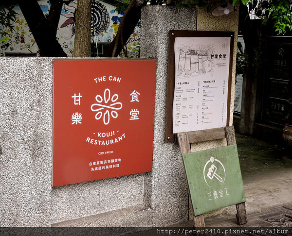
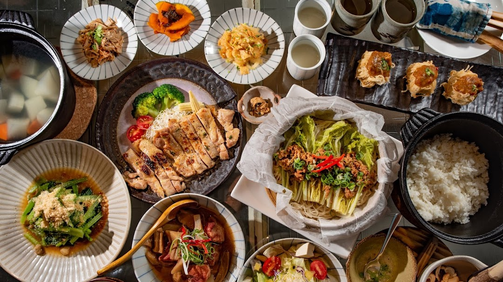

甘樂食堂
google評價：4.3★
店家資訊
地址：新北市三峽區清水路317號
營業時間：營業時間:中午11:00至晚上9:00
店家電話：02-2673-1857

推薦菜單
手工釀酵創意料理680元含:
甘酒飲 豆腐沙拉 鹽麴漬物 黃金麵線捲
味噌溜娃娃 豆腐拌菜 味噌燉肉
鹽麴雞腿排 鮮蔬原味湯 三峽好茶 手做甜品
顧客評論
這家店是三峽的古厝改建而成的，主要賣了很多豆製食品，包括味噌、鹽麴、甘酒等都有活用手工豆腐跟釀酵物。其中推薦的「手工釀酵創意料理」有和風感的味噌野菇燉肉具有和風感，以手工味噌燉煮新鮮豬肉，肉質柔軟，味噌很香。還有黃金麵線捲，外層是手工麵線，裡面包覆炸手工豆腐，外脆內軟，口感扎實又柔軟，新奇又好吃。